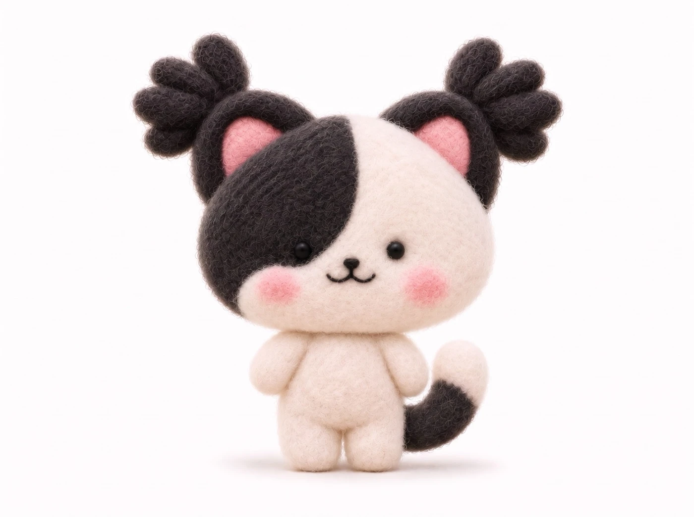
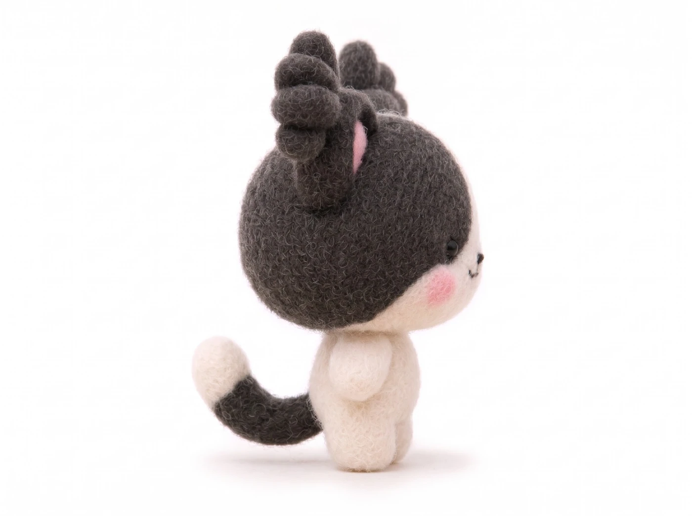

ALL WORKS
AI DESIGN · CHARACTER DEVELOPMENT
치미 · 양모펠트 애니메이션 개발
손으로 빚은 듯한 치미를 짧은 스톱모션 애니메이션의 주인공으로 개발 중입니다.

OVERVIEW
양모펠트로 제안하는 치미의 새로운 모습
차분한 요리와 일상의 소리를 담는 애니메이션 채널을 구상하며, 치미의 큰 머리와 검정·흰색 얼굴 무늬를 손바닥 크기의 양모펠트 인형처럼 표현했습니다.
- 상태
- 채널 콘셉트 · 캐릭터 시트 개발
- 담당
- 캐릭터 콘셉트 · 비주얼 디렉션
- 도구
- AI 이미지 생성 · 이미지 수정
CHARACTER STUDIES
양모펠트 치미 · 정면과 측면



CHARACTER DEVELOPMENT
치미의 형태와 양모 질감을 맞추다
캐릭터의 기준 형태
검정과 흰색으로 나뉜 얼굴 무늬, 작은 콩알눈, 귀 끝 장식털과 흰 끝 꼬리를 치미의 공통 디자인 요소로 두었습니다.
재질과 표정 다듬기
표면의 강한 광택을 줄이고 어두운 털과 밝은 털에 섬유가 고르게 읽히도록 조정했습니다. 작은 코와 입으로 표정을 단순화했습니다.